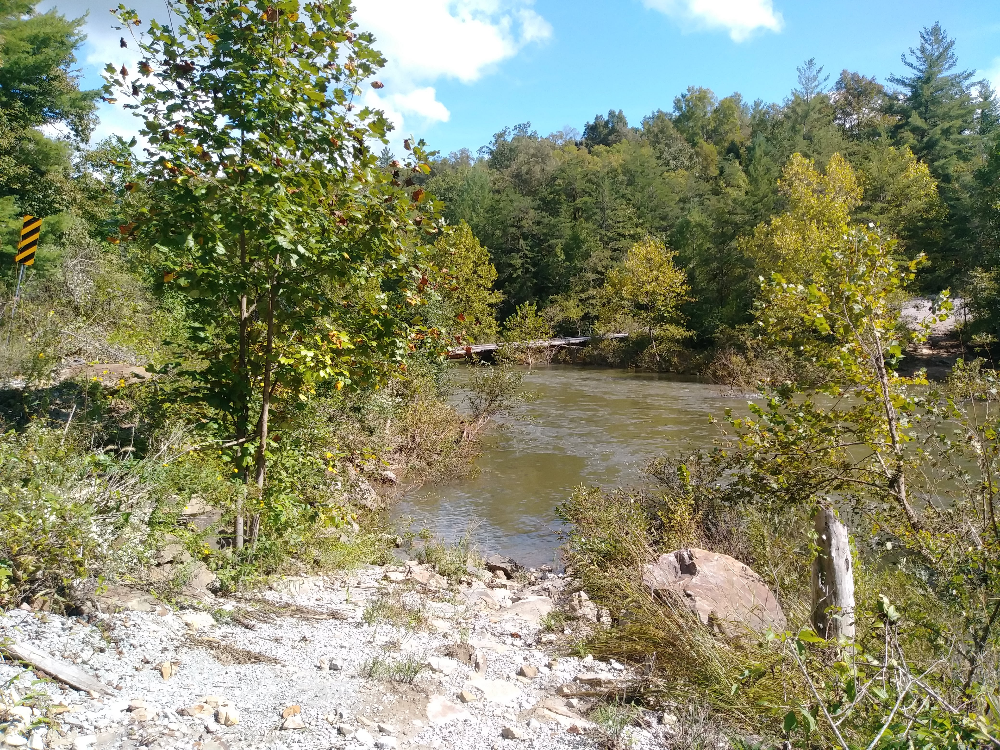
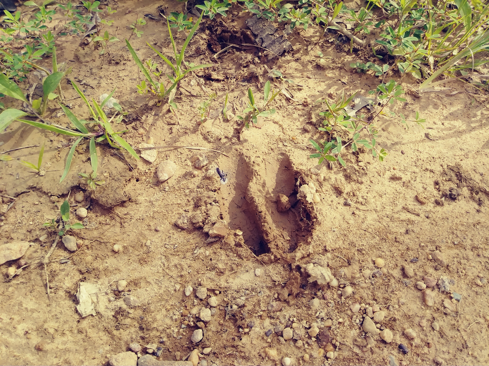

Welcome To Catoosa Wildlife Management Area!
Catoosa is over 80,000 acres of wild life located on the Cumberland Plateau. We have seen lots of animals, including deer, turkey, boar, rattlesnakes, and even bear! Catoosa is funded by hunters and fishermen but is open to the public during the day. During hunts and other activites they may be closed. Closings are usually posted on this website.

Catoosa Wildlife

A swimming hole know as The Devils Breakfast Table can be found at: Lat-Long: 36.058796,-84.792257. The bridge between Genesis Road entrance and Peavine Road entrance is not accessible as of a couple years ago, so the recommended route is now Peavine Road entrance through Wartburg/Hebbertsburg.
Catoosa Wildlife

Catoosa is full of winding gravel roads and beautiful scenes of nature. Main roads are usually accessible with a standard vehicle. A 4x4 is recommended for better traction up the hills and some side roads. There are also many trails that are only accessible by ATV's or hiking. I would recommend to have protection if walking though. I've seen a bear and wild boar just by driving through the main roads.
Catoosa Wildlife 
{kind=link}
This is a view from the Genesis Road side of The Devils Breakfast Table swimming area. This side is a steep incline and you may have to back out if someone else is already there. I recommend going in from the Peavine Road entrance for easier access to the swimming hole and better parking.
Catoosa Wildlife 
{kind=link}
You will often see animals when travelling the main roads, but you will definitely see more if you can get on some of the sideroads. Try to stay quiet, drive slow and enjoy the scenery.
Catoosa Wildlife

We see turkeys and deer about everytime we visit. These turkeys stayed in the road and blocked our way for about 10 minutes one day. We just kept slow behind them and enjoyed the show.
Catoosa Wildlife

One of many deers in the wildlife reserve. Don't be surprised if one runs out in front of your vehicle or is on the side of the road grazing. Drive slow please!